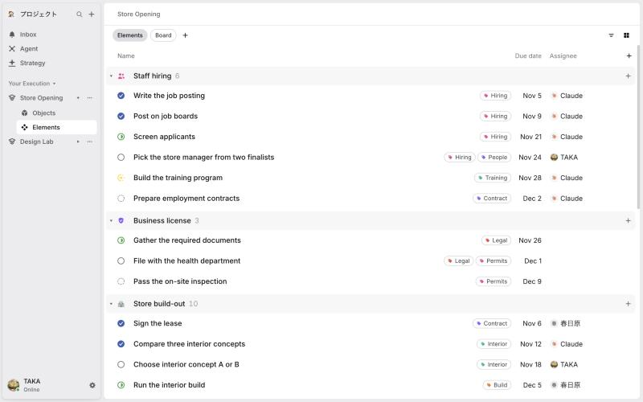

Ask Athenya.
People only decide and approve.
Clayware is a work platform that starts from Athenya, your team’s work assistant. Athenya plans and does the work; people get only the decisions and approvals.


Ask the way you’d ask a teammate.
Athenya researches, records and drafts. Anything that can’t be undone, such as sending mail, waits for your approval.
Look up next week’s trade show exhibitors, put the ones that compete with us in a table, and draft a hello to the ones worth meeting.
- Gathered the exhibitor listSource: the trade show’s official site
- Put the competitors in a tableEach row has its source and when it was read
- Drafted hello emailsNothing has been sent
- Waiting on whether to sendSending mail waits for a person’s approval
- Approval
- Tied to the exact input that runs. Athenya cannot approve its own work.
- Hidden credentials
- Logins stay in a vault, out of Athenya’s sight.
- Full record
- Every run and every approval is logged.
Three parts, on one shared Space.
Everything sits in one Space, your organization’s shared data, so the whole team works from the same records and the same Athenya. Permissions decide who sees what.
AthenyaThe team’s work assistant
Anyone on the team can ask. Athenya plans the work and carries it out within the permissions it is given. When a decision or an approval is needed, it asks a person.
About AthenyaStrategy and ExecutionWhere work is managed
Strategy holds what to achieve: the Vision, the Portfolios that lead to it, and their success criteria. Execution holds who does what: Domains, Objects and Elements.
About Strategy and ExecutionSustainmentEach company’s own business apps
Apps such as accounting or a CRM, built for each company, with functions such as billing and expenses inside. Today you can create Sustainments and list them in the app. The functions inside are being built.
Requests that reach your services are collected in Clayware.
Clayware connects to the services your organization uses, and sets four things for every request: deadline, task, purpose and owner.
Where requests come from
Decided for every request
 Gmail
Gmail- Microsoft 365
 Google Drive
Google Drive
 GitHub
GitHub Slack
Slack
 Your systems (MCP, API)
Your systems (MCP, API)
Also Linear and Asana
- When
- Every task gets a deadline
- What
- Broken down to the smallest action
- Why
- Which goal it serves
- Who
- A person, or AI
Work with defined steps runs automatically.
- Write the stepsThe steps, the conditions to stop, and the shape of the result, as a harness.
- It starts automaticallyAt a set time, or when a notice from outside (webhook) arrives.
- It resumesIt runs with the starter’s permissions and continues from the last record if it stops.
What Clayware solves.
Problems we are often asked about, and how Clayware handles them.
| The problem | What changes | Learn more |
|---|---|---|
| Requests fall between mail, chat, apps and systems | Every channel lands in one place, sorted and owned. | Learn more |
| Deadlines collide without anyone noticing | Dependencies are drawn as lines; collisions turn red. | Learn more |
| Nobody knows where a task stands | One board shows every task and who has it. | Learn more |
| AI was bought, but only writes drafts | AI does the work and stops for your sign-off. | Learn more |
| Tools change, the way of working doesn’t | Engineers on site rebuild the workflow around AI. | Learn more |
We provide three things: the product, change management and education.
ProductClayware
A work platform that starts from Athenya. Athenya does the work; people decide and approve.
See the productChange managementOn site, with your team
Engineers work on site to rework how the job is done, assuming AI is part of it.
How we workEducationAI, transforming work, each person
Comprehensive support covering AI use, transforming the work, and change management for each person.
What we teach